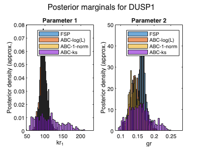

Contents
- SSIT/Examples/example_SI_ABC.m
- Approximate Bayesian Computation (ABC) in the SSIT using runABCsearch
- Load scRNA-seq model:
- Associate scRNA-seq data for gene DUSP1:
- Compute FIM for use in Proposal Distribution
- Set SSA options:
- Set ABC / MCMC options
- Tune the number of SSA simulations
- Run ABC search with three different loss functions
- Reference posterior using FSP-based Metropolis-Hastings
- Plot Comparison
- Save SSA models & solutions
SSIT/Examples/example_SI_ABC.m
%%%%%%%%%%%%%%%%%%%%%%%%%%%%%%%%%%%%%%%%%%%%%%%%%%%%%%%%%%%%%%%%%%%%%%%%%%%
Approximate Bayesian Computation (ABC) in the SSIT using runABCsearch
ABC samples an approximate posterior when the likelihood cannot be computed exactly (e.g., models too large for the FSP). Each MH step simulates the model with the SSA and scores it against the data with a loss function (smaller = better fit). The chain treats -loss as a log-posterior, so for distance-style losses the posterior width depends on the scale of the loss (see computeLossFunctionSSA help).
This example: 1. Loads an scRNA-seq model for DUSP1 and associates it with data. 2. (Optional) Uses the FSP-based FIM to design an MH proposal. 3. Sets SSA options and ABC/MCMC options (including the prior). 4. Checks that SSA noise in the loss is small enough for MH. 5. Runs ABC with three loss functions: 'marginal_loglik' - approximate log-likelihood from SSA histograms 'scaled_one_norm' - L1 distance between CDFs x number of cells 'ksstat' - -log(p-value) of two-sample KS test 6. Runs FSP-based Metropolis-Hastings (exact likelihood) for comparison. 7. Plots the posterior marginals from all four approaches.
See 'help SSIT.computeLossFunctionSSA' for all loss function options.
%%%%%%%%%%%%%%%%%%%%%%%%%%%%%%%%%%%%%%%%%%%%%%%%%%%%%%%%%%%%%%%%%%%%%%%%%%%
Load scRNA-seq model:
load('seqModels/Model_DUSP1.mat')
scRNAseq = Model_DUSP1;
Associate scRNA-seq data for gene DUSP1:
scRNAseq = scRNAseq.loadData('data/Raw_DEX_UpRegulatedGenes_ForSSIT.csv',... {'rna','DUSP1'}); % Choose which parameters to fit. Parameters 1-7 are held at their % stored values; only parameters 8 and 9 are sampled by ABC/MCMC. fitpars = 8:9; scRNAseq.fittingOptions.modelVarsToFit = [fitpars]; % Log prior: independent Gaussian on log10(theta), centered at theta = 1 % with SD = 1 decade. Receives parameters in linear space. % NOTE: the prior must be set on the model (scRNAseq.fittingOptions.logPrior), % not in fitOptions, to be used by both computeLossFunctionSSA and the % FSP likelihood. scRNAseq.fittingOptions.logPrior = @(x)-sum(log10(x).^2/2); % Matching prior covariance in natural-log space (used in the FIM below): % log10(theta) ~ N(0,1) <=> ln(theta) ~ N(0,(ln 10)^2). priorCovariance = log(10)^2*eye(length(fitpars));
Compute FIM for use in Proposal Distribution
Use the FIM to generate the covariance matrix for the proposal distribution. This step is optional and only possible for models for which the FSP solution can be obtained, but using the FIM inverse in the proposal distribution often leads to improved mixing of the MH chains. FIMs are computed in log-parameter space (scale='log') because the MH sampler works on log(parameters) by default (fitOptions.logForm=true). COV approximates the posterior covariance of log(parameters) for the full dataset (dataSet.nCells cells at each time) combined with the lognormal prior (priorCovariance, also in natural-log space).
scRNAseq = scRNAseq.solve(solver='fsp'); % Initial FSP solve [~,scRNAseq] = scRNAseq.generatePDO; % Update PDO. scRNAseq = scRNAseq.solve(solver='fspsens');% FSP Sensitivity solve FIMs = scRNAseq.computeFIM(scale='log'); % Compute FIMs FIM = scRNAseq.evaluateExperiment(FIMs,scRNAseq.dataSet.nCells,priorCovariance); % FIM{1} = total FIM for the fitted parameters COV = (0.5*FIM{1}+0.5*transpose(FIM{1}))^(-1); % Enforce symmetry and invert
Set SSA options:
%Set solution scheme to SSA: scRNAseq.solutionScheme = 'SSA'; % Start SSA trajectories at t = -1000 so they reach steady state before % the experiment (t = 0). The FSP section below removes this extra time as % it estimates the zero time SS directly. The data are only compared at the % measured times (t >= 0). scRNAseq.initialTime = -1000; scRNAseq.tSpan = [scRNAseq.initialTime,scRNAseq.tSpan]; % Run iterations in parallel with multiple cores: scRNAseq.ssaOptions.useParallel = true;
Set ABC / MCMC options
runABCsearch passes 'fitOptions' to maximizeLikelihood with the 'MetropolisHastings' algorithm. Tune these depending on your problem size.
fitOptions = struct(); fitOptions.numberOfSamples = 1000; % Number of samples to keep (after thinning) fitOptions.burnIn = 100; % Initial MH steps discarded fitOptions.thin = 2; % Keep every 2nd step (total steps = burnIn + thin*numberOfSamples) fitOptions.progress = false; % No live plot of the chain fitOptions.recomputeCurrentState = true; % Re-simulate the current state every step. % Needed for noisy SSA losses (prevents the chain % sticking after a lucky draw); doubles cost per step. % Proposal distribution (in log-parameter space): random walk % log(theta_new) = log(theta) + step. % With the FIM, step ~ N(0, 0.6*COV), which matches the posterior shape. % Without it, use small isotropic steps. Aim for 20-40% acceptance, and % adjust proposalWidthScale if acceptance is far outside that range. if exist("COV","var") % Use the FIM based COV if available. proposalWidthScale = 0.6; % Proposal scale fitOptions.proposalDistribution = @(x)x+proposalWidthScale*mvnrnd(0*x,COV); else % Use a scaled random number. proposalWidthScale = 0.01; % Proposal scale fitOptions.proposalDistribution = @(x)x+proposalWidthScale*randn(size(x)); end % Initial parameter guess (linear space). Passing [] would use the % current model parameters, which is equivalent to this line: parGuess = cell2mat(scRNAseq.parameters((fitpars),2)); % Use a separate block of nSimsPerExpt SSA trajectories for each time % point so the simulated time points are independent, like cells in % separate experiments. Requires nSimsPerExpt*numTimes total runs. enforceIndependence = true;
Tune the number of SSA simulations
The SSA-based loss is a random estimate: re-evaluating it at the same parameters gives a different value each time. If its standard deviation is much above ~1-2 (in log-likelihood units), MH acceptance collapses. Increase nSimsPerExpt until std(L) is in that range. Use the same enforceIndependence setting as the ABC run below. This guideline applies to 'marginal_loglik'; other losses are on different scales, so judge their noise relative to the loss differences between nearby parameters.
scRNAseq.ssaOptions.nSimsPerExpt=4000; % SSA trajectories per time point scRNAseq = scRNAseq.solve(solver='ssa'); % Initial solve (sets up SSA files) L = zeros(1,20); for k = 1:20 L(k) = scRNAseq.computeLossFunctionSSA('marginal_loglik',parGuess,true); end std(L) % if well above ~2, noise in the model simulations will lead to low acceptance
ans = 3.803105215615914
Run ABC search with three different loss functions
For each MH step, runABCsearch: * simulates the SSA at the proposed parameters, * computes the chosen loss against the data (plus the prior, if set in scRNAseq.fittingOptions.logPrior), * accepts/rejects using exp(-loss) as the (approximate) posterior.
Outputs: parsABC - best (minimum-loss) parameters found in the chain minimumLoss - loss at parsABC ResultsABC - chain samples (log-parameters), acceptance, ESS, etc.
'marginal_loglik' is closest to a true likelihood, so it should be closest to the FSP posterior. 'scaled_one_norm' and 'ksstat' are distances, and their posterior widths depend on the loss scale.
ABCMetrics = {'marginal_loglik','scaled_one_norm','ksstat'};
ABCMetricShort = {'log(L)','1-norm','ks'};
for iMetric = 1:3
% Choose loss function for ABC (default: 'cdf_one_norm'):
lossFunction = ABCMetrics{iMetric};
[parsABC, minimumLoss, ResultsABC{iMetric}] = ...
scRNAseq.runABCsearch(parGuess, lossFunction, [],...
fitOptions, enforceIndependence);
fprintf('ABC completed for %s.\n',ABCMetrics{iMetric});
fprintf('Minimum loss value: %g\n', minimumLoss);
disp('Best-fit parameters (ABC):');
disp(parsABC(:).');
end
Completed 0 out of 2000 samples. Acceptance = 0.51 Completed 100 out of 2000 samples. Acceptance = 0.54 Completed 200 out of 2000 samples. Acceptance = 0.55333 Completed 300 out of 2000 samples. Acceptance = 0.575 Completed 400 out of 2000 samples. Acceptance = 0.576 Completed 500 out of 2000 samples. Acceptance = 0.58167 Completed 600 out of 2000 samples. Acceptance = 0.57714 Completed 700 out of 2000 samples. Acceptance = 0.5675 Completed 800 out of 2000 samples. Acceptance = 0.56222 Completed 900 out of 2000 samples. Acceptance = 0.561 Completed 1000 out of 2000 samples. Acceptance = 0.55091 Completed 1100 out of 2000 samples. Acceptance = 0.55917 Completed 1200 out of 2000 samples. Acceptance = 0.56385 Completed 1300 out of 2000 samples. Acceptance = 0.56429 Completed 1400 out of 2000 samples. Acceptance = 0.55667 Completed 1500 out of 2000 samples. Acceptance = 0.55188 Completed 1600 out of 2000 samples. Acceptance = 0.55294 Completed 1700 out of 2000 samples. Acceptance = 0.55167 Completed 1800 out of 2000 samples. Acceptance = 0.55 Completed 1900 out of 2000 samples. Acceptance = 0.5485 Completed 2000 out of 2000 samples. Acceptance = 0.54238 ABC completed for marginal_loglik. Minimum loss value: 2556.37 Best-fit parameters (ABC): 88.069055783565787 0.140157416267385 Completed 0 out of 2000 samples. Acceptance = 0.44 Completed 100 out of 2000 samples. Acceptance = 0.465 Completed 200 out of 2000 samples. Acceptance = 0.49 Completed 300 out of 2000 samples. Acceptance = 0.5175 Completed 400 out of 2000 samples. Acceptance = 0.524 Completed 500 out of 2000 samples. Acceptance = 0.52167 Completed 600 out of 2000 samples. Acceptance = 0.51143 Completed 700 out of 2000 samples. Acceptance = 0.51 Completed 800 out of 2000 samples. Acceptance = 0.50111 Completed 900 out of 2000 samples. Acceptance = 0.493 Completed 1000 out of 2000 samples. Acceptance = 0.48818 Completed 1100 out of 2000 samples. Acceptance = 0.4875 Completed 1200 out of 2000 samples. Acceptance = 0.48769 Completed 1300 out of 2000 samples. Acceptance = 0.48929 Completed 1400 out of 2000 samples. Acceptance = 0.49067 Completed 1500 out of 2000 samples. Acceptance = 0.49312 Completed 1600 out of 2000 samples. Acceptance = 0.49529 Completed 1700 out of 2000 samples. Acceptance = 0.49111 Completed 1800 out of 2000 samples. Acceptance = 0.49158 Completed 1900 out of 2000 samples. Acceptance = 0.492 Completed 2000 out of 2000 samples. Acceptance = 0.48857 ABC completed for scaled_one_norm. Minimum loss value: 199.82 Best-fit parameters (ABC): 95.511590687861187 0.140814360718210 Completed 0 out of 2000 samples. Acceptance = 0.72 Completed 100 out of 2000 samples. Acceptance = 0.71 Completed 200 out of 2000 samples. Acceptance = 0.71 Completed 300 out of 2000 samples. Acceptance = 0.7125 Completed 400 out of 2000 samples. Acceptance = 0.704 Completed 500 out of 2000 samples. Acceptance = 0.69667 Completed 600 out of 2000 samples. Acceptance = 0.70714 Completed 700 out of 2000 samples. Acceptance = 0.7025 Completed 800 out of 2000 samples. Acceptance = 0.71 Completed 900 out of 2000 samples. Acceptance = 0.711 Completed 1000 out of 2000 samples. Acceptance = 0.71182 Completed 1100 out of 2000 samples. Acceptance = 0.71083 Completed 1200 out of 2000 samples. Acceptance = 0.70385 Completed 1300 out of 2000 samples. Acceptance = 0.70571 Completed 1400 out of 2000 samples. Acceptance = 0.706 Completed 1500 out of 2000 samples. Acceptance = 0.69812 Completed 1600 out of 2000 samples. Acceptance = 0.69706 Completed 1700 out of 2000 samples. Acceptance = 0.69222 Completed 1800 out of 2000 samples. Acceptance = 0.69316 Completed 1900 out of 2000 samples. Acceptance = 0.6945 Completed 2000 out of 2000 samples. Acceptance = 0.69857 ABC completed for ksstat. Minimum loss value: 5.48994 Best-fit parameters (ABC): 83.856475585180860 0.141753140101199
Reference posterior using FSP-based Metropolis-Hastings
The FSP gives the exact likelihood, so this is the reference posterior for judging the ABC results. The same MH settings, proposal and prior are used for a fair comparison. The SSA burn-in period is removed and recomputeCurrentState is turned off, because the FSP likelihood is deterministic.
scRNAseq.tSpan = scRNAseq.tSpan(scRNAseq.tSpan>=0); % remove the negative time. scRNAseq.initialTime = 0; scRNAseq.solutionScheme = 'fsp'; fitOptions.recomputeCurrentState = false; % Do not Recompute Likelihood at each step in chain. scRNAseq = scRNAseq.maximizeLikelihood(fitOptions=fitOptions,... fitAlgorithm='MetropolisHastings');
Completed 0 out of 2000 samples. Acceptance = 0.63 Completed 100 out of 2000 samples. Acceptance = 0.68 Completed 200 out of 2000 samples. Acceptance = 0.69333 Completed 300 out of 2000 samples. Acceptance = 0.7075 Completed 400 out of 2000 samples. Acceptance = 0.706 Completed 500 out of 2000 samples. Acceptance = 0.69833 Completed 600 out of 2000 samples. Acceptance = 0.69714 Completed 700 out of 2000 samples. Acceptance = 0.69375 Completed 800 out of 2000 samples. Acceptance = 0.69556 Completed 900 out of 2000 samples. Acceptance = 0.704 Completed 1000 out of 2000 samples. Acceptance = 0.70727 Completed 1100 out of 2000 samples. Acceptance = 0.71167 Completed 1200 out of 2000 samples. Acceptance = 0.71615 Completed 1300 out of 2000 samples. Acceptance = 0.71643 Completed 1400 out of 2000 samples. Acceptance = 0.714 Completed 1500 out of 2000 samples. Acceptance = 0.71437 Completed 1600 out of 2000 samples. Acceptance = 0.71765 Completed 1700 out of 2000 samples. Acceptance = 0.71722 Completed 1800 out of 2000 samples. Acceptance = 0.71895 Completed 1900 out of 2000 samples. Acceptance = 0.718 Completed 2000 out of 2000 samples. Acceptance = 0.71476
Plot Comparison
MH chains are stored in log-parameter space when logForm = true (the default), so convert back to linear values for plotting.
histogramTitle = 'Posterior marginals for DUSP1'; figure(1); clf; if ~isfield(fitOptions, 'logForm') || fitOptions.logForm for iMetric = 1:3 parChainABC{iMetric} = exp(ResultsABC{iMetric}.mhSamples); % Default MH samples are stored in log-parameter space. end parChainFSP = exp(scRNAseq.Solutions.mhResults.mhSamples); % FSP MH samples are stored in log-parameter space. else for iMetric = 1:3 parChainABC{iMetric} = ResultsABC{iMetric}.mhSamples; end parChainFSP = (scRNAseq.Solutions.mhResults.mhSamples); end nPars = size(parChainFSP, 2); for k = 1:nPars subplot(ceil(nPars/2), 2, k); histogram(parChainFSP(:,k), 40, 'Normalization', 'pdf', ... 'DisplayName','FSP','DisplayStyle','bar'); hold on; for iMetric = 1:3 histogram(parChainABC{iMetric}(:,k), 40, 'Normalization', 'pdf', ... 'DisplayName',['ABC-',ABCMetricShort{iMetric}],'DisplayStyle','bar'); end title(sprintf('Parameter %d', k)); xlabel(scRNAseq.parameters{fitpars(k),1}); ylabel('Posterior density (approx.)'); legend("show") end sgtitle(histogramTitle);

Save SSA models & solutions
Save ABC results for all loss functions and the model (which also holds the FSP chain in scRNAseq.Solutions.mhResults) for later plotting.
saveNames = unique({'scRNAseq'
'ResultsABC'
'fitOptions'
'ABCMetricShort'
});
save('example_SI_ABC',saveNames{:})